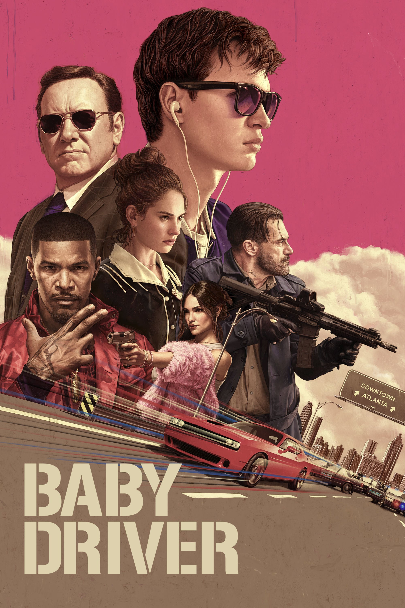
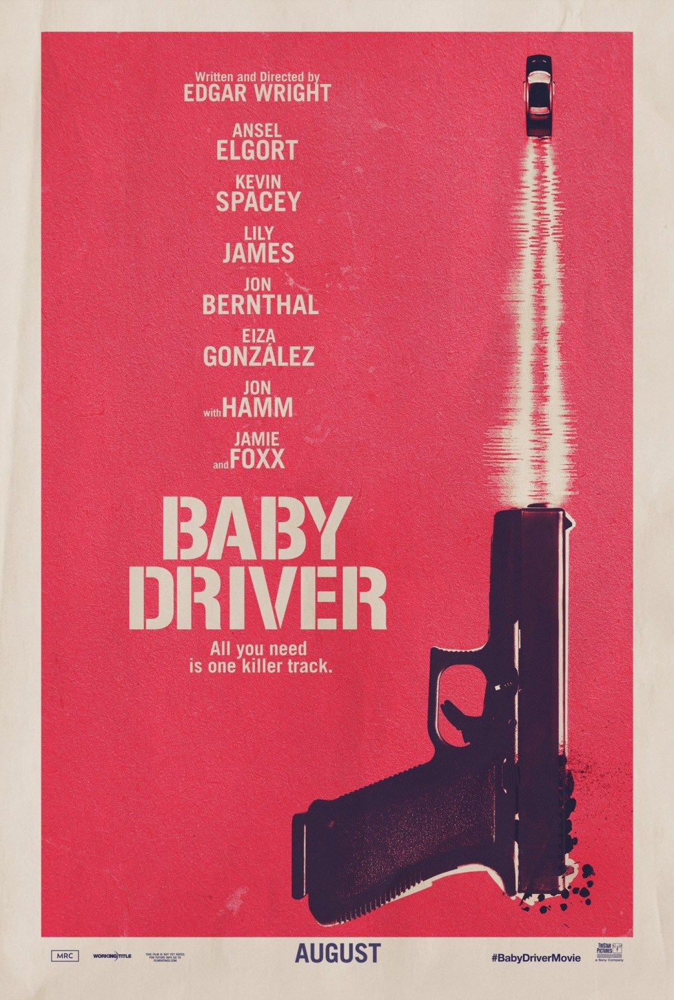

Action, Crime, Thriller
2017
113 minutes
Edgar Wright
Baby Driver follows a young getaway driver named Baby who relies on music to be the best in the game. Working for a crime boss named Doc, Baby wants to leave the criminal life behind after meeting Debora. However, one last dangerous job threatens his chance at freedom and love.